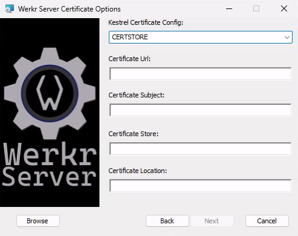
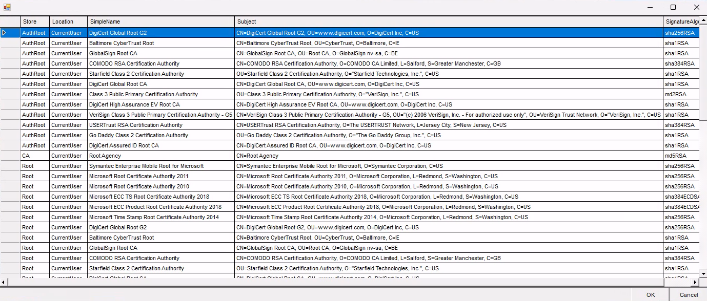
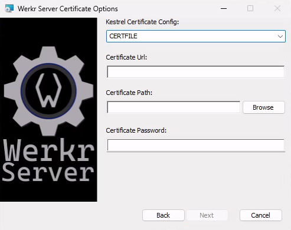
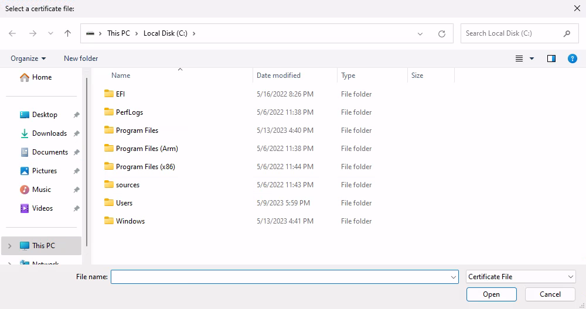
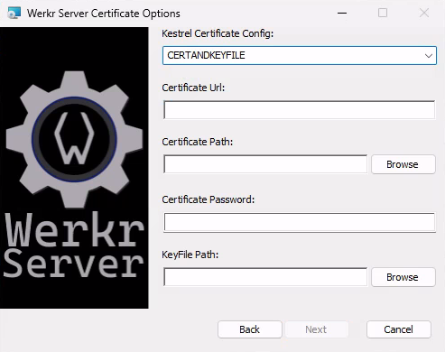
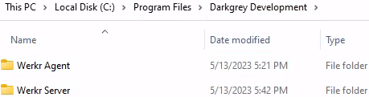

This document is intended to show you the Werkr Server Windows MSI installer process and highlight key details.
To get started download the CPU appropriate MSI file from the github releases page. Note that if you're not sure which msi file to download then you probably want the x64 version.
Msi Installation
- Double Click the Msi installer and select Next.
- Specfy Server settings.
- The
Allowed Hostssettings determines which hosts are allowed to communicate with the Server.- Leave this as
*to enable all outside clients and agents to communicate with this Server. - This list is semi-colon delimited. Ex:
example.com;localhost;192.168.1.16
- Leave this as
- Select Certificate Type from dropdown.

- Regardless of which certificate type you choose, you will need to enter the Url that you want the Server to listen on.
- Once populated, You may need to click out of the Certificate Url field for the "Next" button to become enabled.
- 
- If you know your certificates store information then you can feel free to paste it into the fields.
- Otherwise select the browse button on the bottom left and you can select the appropriate certificate from the ones availabe in the store.
- 
CertStore (click me for more details)
- 
- 
CertFile (click me for more details)
- 
CertAndKeyFile (click me for more details)
- Specify logging levels. It is suggested that you leave these at their default values unless you have a specific reason to change them.
- Select Install Path - You can choose any location you want the application to be installed at.
- Select Install

The installer will now
- Extract the portable application files
- Populate the appsettings file with the settings you selected
- Register the application as a windows service
- Register installation details with windows to allow for a simple uninstall.
- Installation Complete, Select Finish!
Post Install & Removal
After installation you can find the application registered under the Programs and Features control panel menu, as well as under the Installed Apps menu.
The application has also been registered as a windows service.
Service Info (click me for more details)

Interact with the service (start/stop/disable) via the Windows Services mmc snapin.
Msi Removal:
The application can be removed by selecting the Uninstall button from either the Programs and Features or Installed Apps menus.
Programs and Features (click me for more details)

Theuninstallbutton in this menu is hidden until you select the elipses menu on the right side of the screen.
Installed Apps (click me for more details)
Please note that after uninstalling the application you may still have a Werkr Server directory in the install location.

This directory should only contain leftover log files that were generated by the application during its operation.
You can feel free to delete this directory and its contents after the uninstall wizard has completed successfully.
Portable Removal
If you downloaded the portable version of the application then it can be "uninstalled" simply by deleting the folder that has the application files.